Product design · UX research · ESG intelligence
One platform.
Eight roles.
One source of truth.
Designing Basma — an ESG intelligence platform built around the people, data, workflows, and decisions behind environmental reporting.
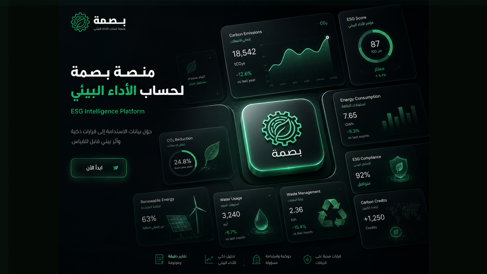
The problem
ESG isn't one workflow.
One person enters the data. Another validates it. Another manages the evidence. Another handles compliance, another analyses performance, another needs the executive picture — and an external auditor reviews all of it from outside.
So the product question was never how the dashboard should look. It was how one platform gives every role the right information and actions without becoming a maze.
One platform
Eight roles inside one shared system
Different jobs
Entry, validation, evidence, audit, analysis
Different permissions
Governance decides what each role can see and do
One product
Eight roles meant eight definitions of "useful"
Research · لم نبدأ بالتصميم
Before designing the interface, we needed to understand the system.
We didn't start with screens. We started with the ecosystem: the ESG domain, the stakeholders inside a factory, and where the real gap was.
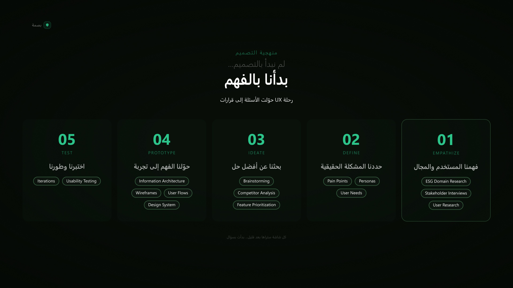
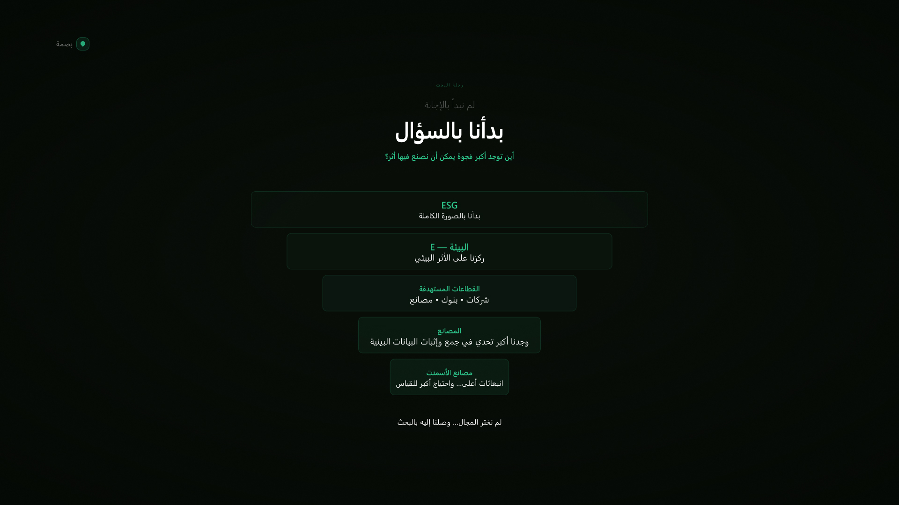
Stakeholder map · 8 roles
Same platform. Different jobs.
Every role was mapped across six dimensions: role, responsible, sees, can do, supervised by, and governance notes.
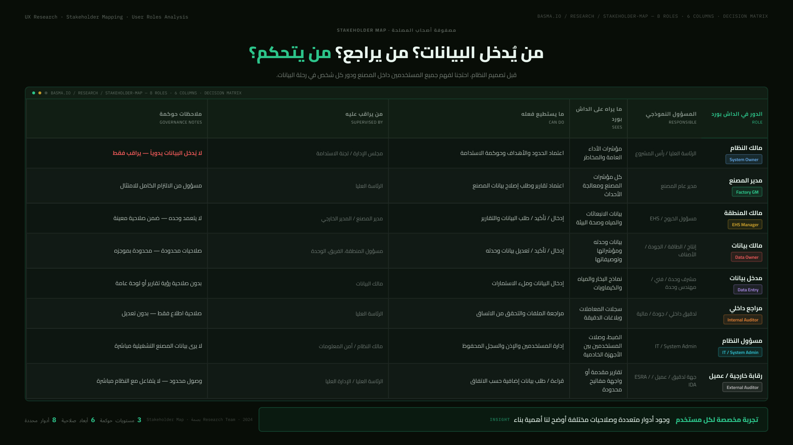
Once the roles were mapped, the product stopped looking like one dashboard problem.
Value proposition canvas
Different users. Different value. One product.
The canvas maps each stakeholder's wants against what Basma gives them — customer jobs, gains and pains on one side; products & services, gain creators and pain relievers on the other.


Understanding ESG
ESG is not one metric.
Environmental, Social, Governance. Basma focuses on the environmental side — and even there, a single number carries data, evidence, governance, validation, reporting, analysis, and a decision behind it. That chain shaped the architecture.
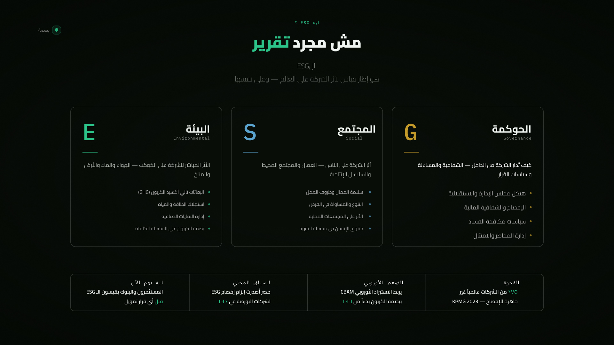
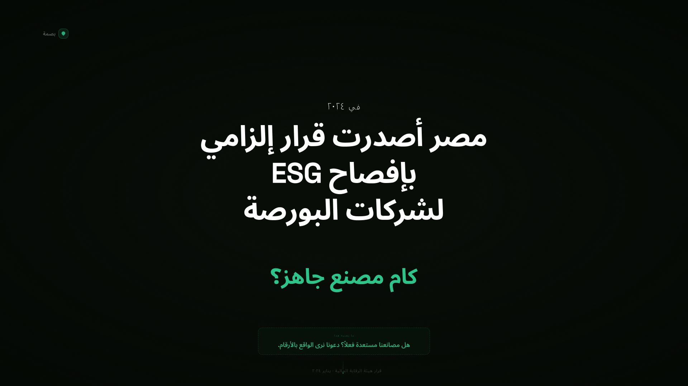
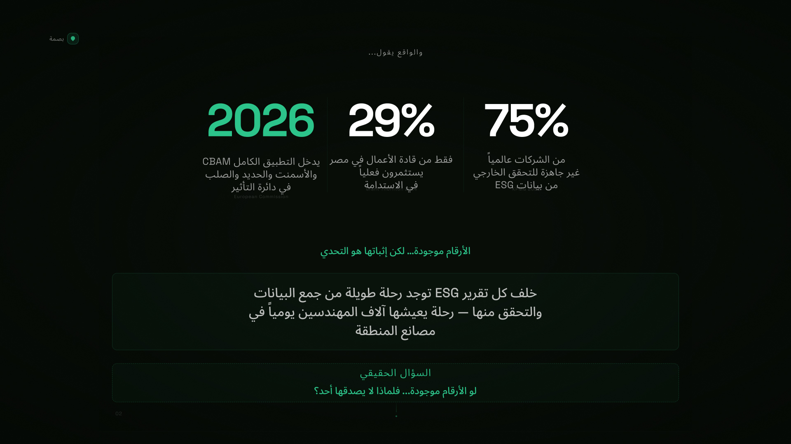
Competitive analysis · feature benchmark
We weren't looking for another dashboard.
EcoVadis, Sustainalytics and Carbon Footprint were compared feature by feature. After analysing more than 20 criteria, the opportunity was an experience that fits the reality of industrial factories.
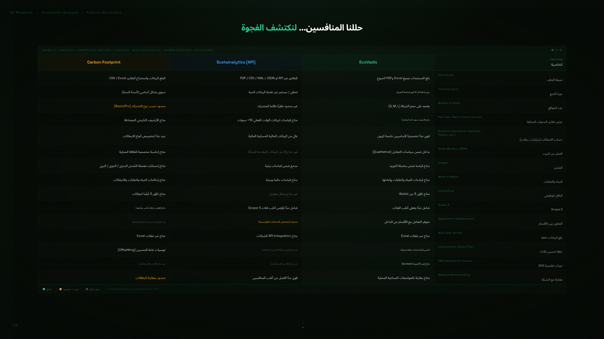
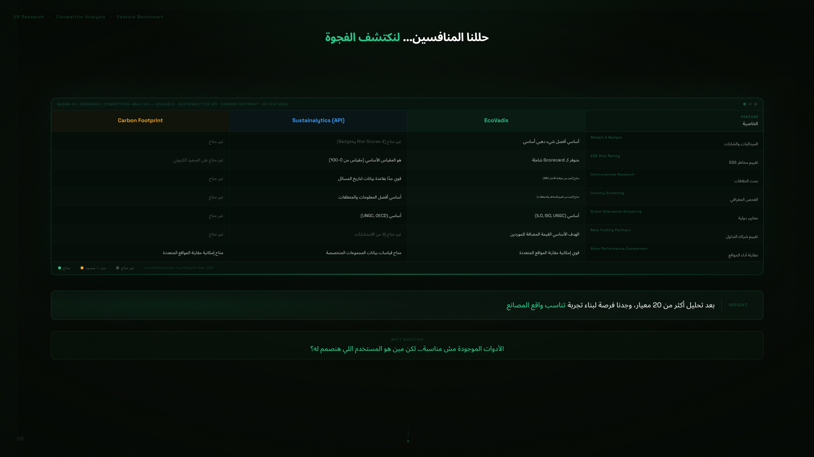
Design opportunity
The question wasn't what the dashboard should show. It was what each person should be able to do.
01
Role-aware experience
The stakeholder map decides what each role sees and can do.
02
Structured complexity
The architecture organises the information space instead of displaying it.
03
Data → evidence → decision
Entry, evidence, the carbon engine, validation, analysis and reports are one chain.
04
One system, multiple workflows
Data entry, review and audit each get their own path through the same product.
05
Actionable information
Dashboards and reports say what the data means and what to do next.
Information architecture
Before designing screens, we designed the structure.
Dashboard, data entry, data organization, data evidence, carbon engine, validation layer, analysis insights, reports, AI layer, training model, settings — mapped in two parts before any UI existed.


70+ screens only work when the system behind them makes sense.
Wireframes · prototype · testing
Before the visual layer, we tested the structure.
Wireframes covered the core product areas — dashboard, evidence center, validation log, verification requests, user management. Information architecture, wireframes, user flows and the design system became the prototype; usability testing and iterations came before any polish.

The product
From data to decisions.
Data entry with review steps, the EHS dashboard with pending reviews, environmental performance, intelligent analysis, correction requests, and the reviews an EHS manager receives — in light and dark.

Numbers need evidence
Data carries documents, an audit trail, and a validation state through to approval.
One system, different views
A data-entry user and an EHS manager land in different workspaces, not one universal dashboard.
Light and dark
Both modes were designed as part of the system, in Arabic RTL.
Branding
بصمة — a name that carries the product.
The leaf stands for the environment, the gear for heavy industry, and the two combine into one mark: the environment inside the factory.
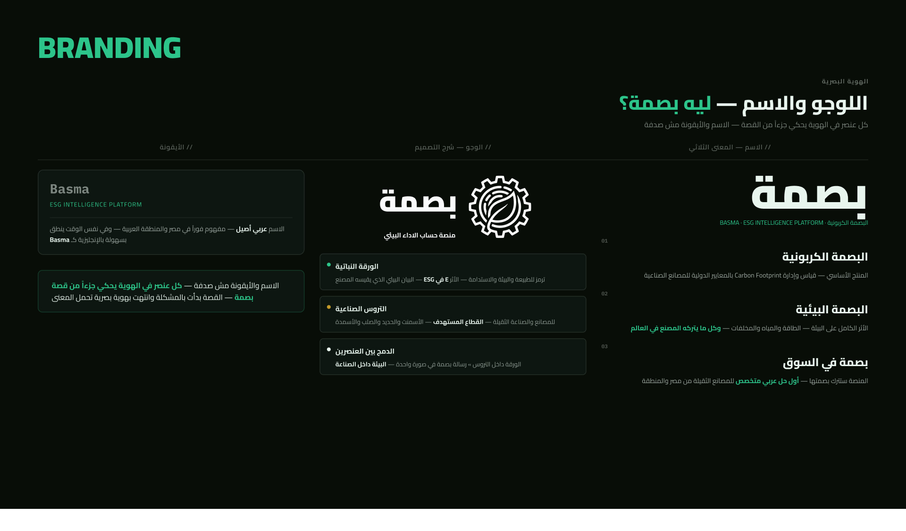
Outside the interface
The product needed a voice outside the interface too.
Posters and packaging of the offer — including how Basma enters the market and why the pricing is structured the way it is.


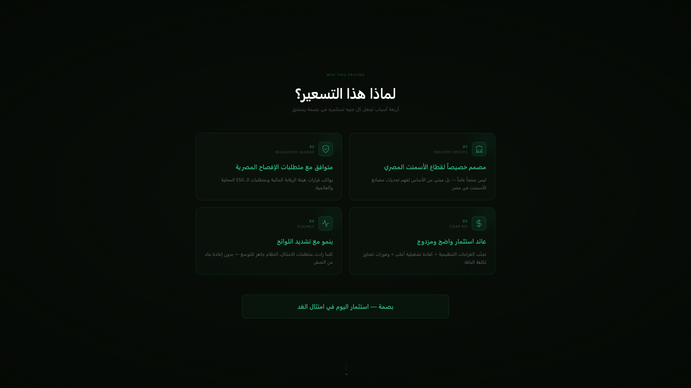
The result
From
To
We didn't simplify the product by removing complexity. We simplified it by giving the complexity a structure.